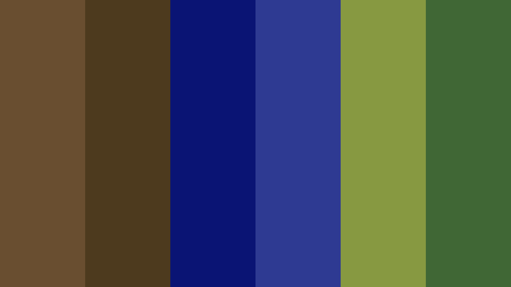
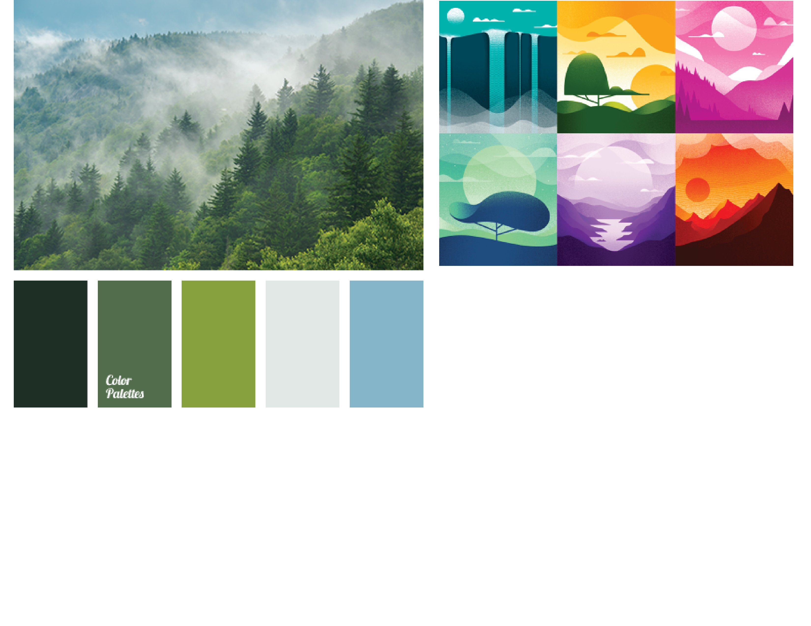
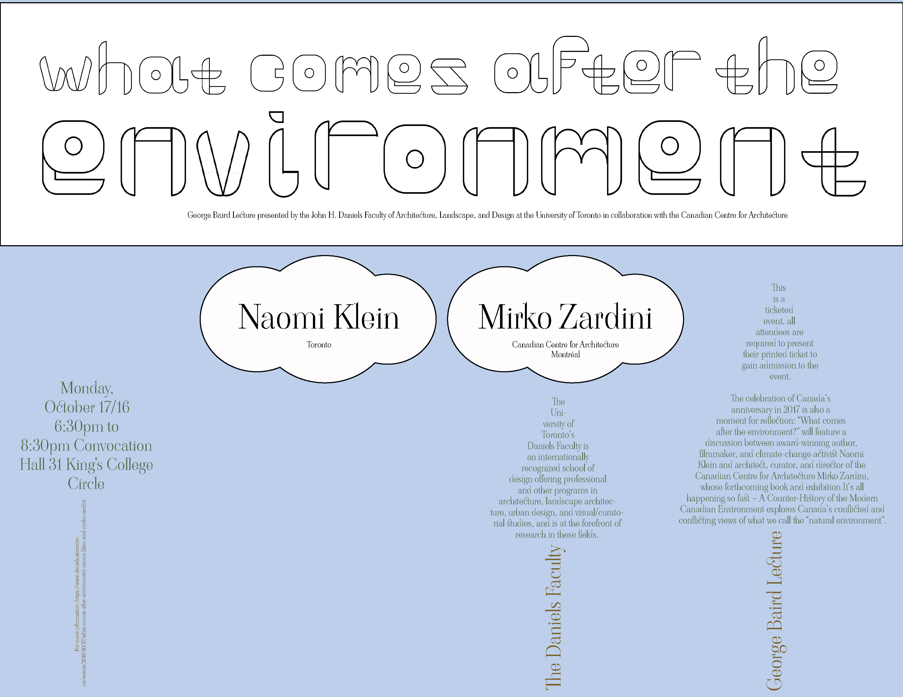
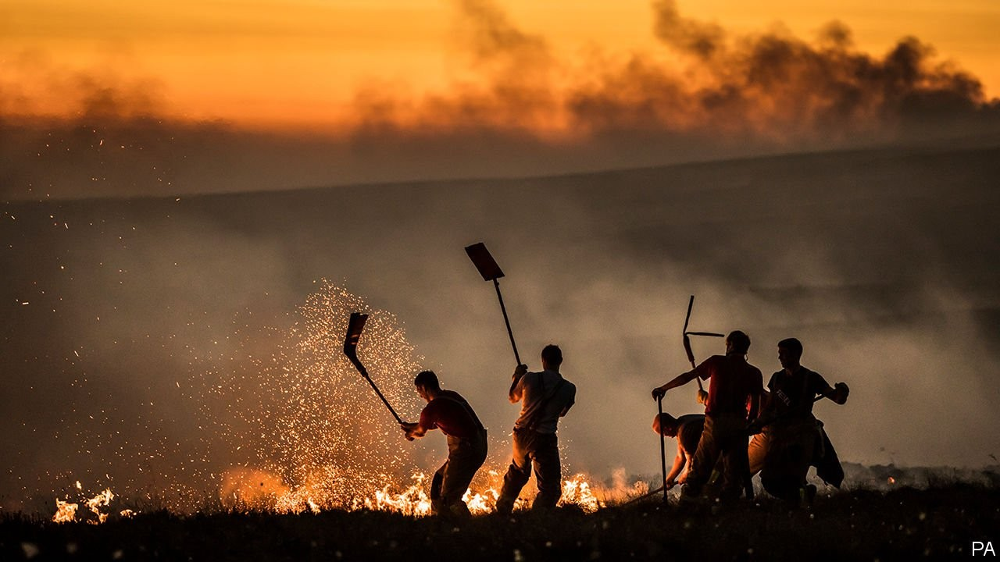
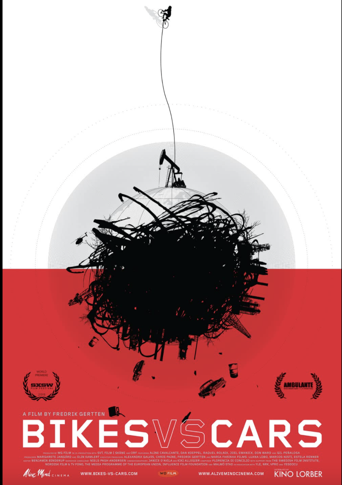
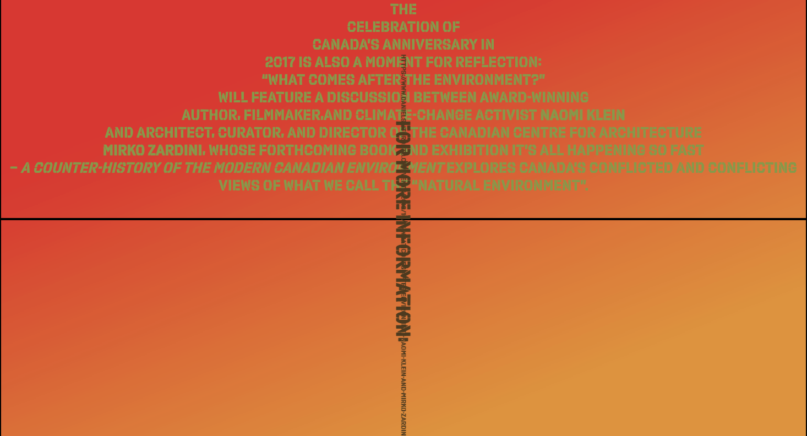
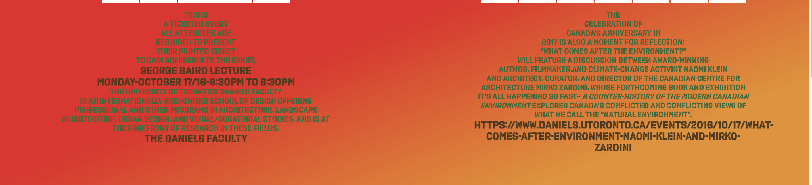
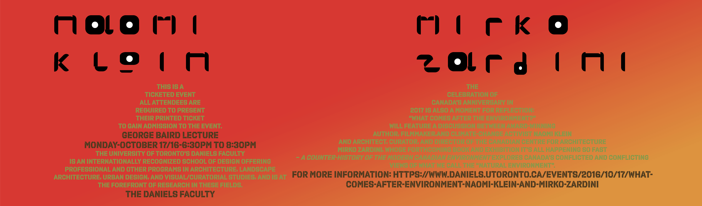
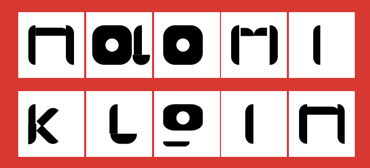

Brainstorming and Sketches
At first, I chose the package Visiting Designer Lecture Series at Rhode Island School of Design. Because Rhode Island School of Design is a design school, I was thinking about doing a simple black and white design with a universal sans-serif typeface to contrast my CSS typeface from the previous project. With the idea of being clean and simple, I follow the basic four columns grid structure.
Note from Critique:
Designs did not connect with the package content.
The secondary typeface does not connect with Css Typeface. Should looking for other typefaces that have a more friendly appearance.
Speakers' names can be displayed in different ways to create three levels of contrast.
I got stuck with the first package I chose, so I moved to the What comes after the environment? at Canadian Centre for Architecture package.
References
 Sketch
 Thinking about the environment, I started looking on the internet which colors are represent natural elements. With the natural concept, I went with the calm tone without paying attention to the words "crisis" or "conflict"-those are strong words to describe what's going on in the lectures.
Without using the illustrations to show the content concept, I decided to shape texts into trees shape.
From the previous critique, I was looking for secondary typefaces that have a softer look. I chose a Google Fonts called Viaoda Libre based on its thin stroke that seems somewhat similar to my CSS Typeface and elegant feeling.
Note from Critique:
The color pallette was too calm, not show a sense of urgency/tension.
The secondary typeface too elegant for the content.
Research
 After receiving feedback from the second critique, I focused on looking for articles or protesting environment posters about serious environmental problems.
Colors like red, yellow, and orange are used to create tension.
Sketches
I wanted to highlight the speakers' names, so I decided to use my CSS typeface for their names too.
For the body texts, I chose Export and Industry INC. They all have solid edges and look mechanic that I believed can represent the human-made environment.
For the tree shapes body texts, I still keep them green and dark brown while changing the background into stronger colors.
I included black as well because black and red high contrast to each other.
I decided to move on with sketch #2.
Sketching with Code
Problem 1:
I started with a copy and pasted my codes from Css Typefaces Project into the Web Typographic Poster project. When I carried them into this project, one big problem was the shapes I drew changed when I changed their sizes.
When I did them in CSS Typeface, I used px and drew lots of unnecessary extra shapes, so they ended up being messy in the end.
Since I believed I would use two different sizes of them based on the sketch, I decided to simplify and fix all of them.
I changed px into %.
Problem 2: When I did the tree stem, I used the transform to rotate texts 90 deg. However, it doesn't look the way I wanted.
I ended up changing my design. Instead of doing trees, I changed into mountain shapes. I think by doing that, the original concept idea does not change.
Problem 3: When I commented out the letter div background, the space between each letter looks awkward. That was how I ended up keeping the background colors for all of them. With the background, people will be less likely to pay too much attention to inappropriate kerning.
 